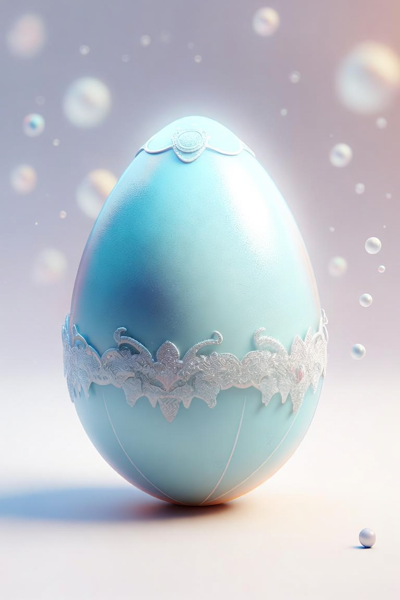

🌟 小一英文文法大冒險下 🌟

快完成關卡,孵化英雄/公主去消滅破壞圖書的壞人
請選擇關卡開始挑戰（隨機20題）！
滿分20分 = 🌟大星星 | 合格10分 = ⭐小星星
🗑️ 清除所有記錄
返回小朋友學習大冒險 🚀
🔊
開始遊戲 🚀
返回主頁 🏠
第 1 題 / 共 20 題
淺
🔊
Move to next question ➡️
⬅️ 上一頁
🏠 回到主頁
下一頁 ➡️
🎉 關卡完成！ 🎉
📝 你的答題總結 (點擊錯題重新挑戰)：
🔄 重新挑戰這一關
返回主頁看公主成長 👑
🔥 錯題重新挑戰 🔥
🔊
🔊
取消